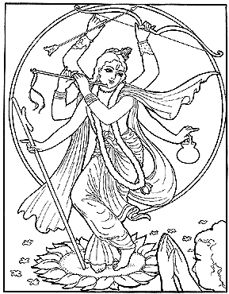

El Señor Nimai se expandió, para que Nitai viera Su forma de seis brazos de tres encarnaciones. Sri Krishna con flauta, Sri Rama con arco y flecha, mientras que Nimai sostenía la danda de un renunciante.